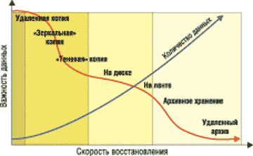
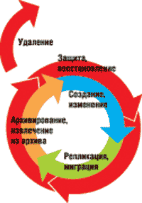
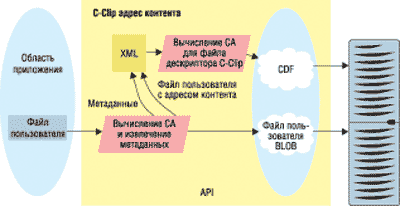

Владислав Шаров
Каждый год в мире создаются тысячи петабайт новых данных. Согласно ряду экспертных оценок, объемы корпоративной информации ежегодно утраиваются, причем более половины этого объема составляет информация в неструктурированном виде (традиционные офисные документы, мультимедийные данные, чертежи, XML-документы, HTML-файлы, электронная почта, графические образы документов и т. д.). Чтобы обеспечить непрерывное и плодотворное взаимодействие сотрудников, партнеров и заказчиков, требуются адекватные инструменты, которые поддержали бы такое взаимодействие и позволяли организовать обмен информацией на протяжении всего ее жизненного цикла, как внутри, так и вне компании.
Вместе с нарастающим объемом данных расширяются и системы их хранения. Однако управлять такими системами, используя старые методы, становится все труднее, а стоимость их резко возрастает. И при этом трудно реализовать высокую доступность, достаточную производительность, адекватную темпам развития бизнеса, надежность хранения информации, которая соответствовала бы требованиям бизнеса и государственных регулирующих органов к долгосрочному хранению информации.
Одно из решений проблемы состоит в том, чтобы разделить данные по критерию их ценности для бизнеса и управлять информацией с учетом изменения ее ценности во времени. Такой подход стали называть управлением жизненным циклом информации ILM (Information Lifecycle Management). Согласно этой концепции, наиболее важная на текущий момент информация должна автоматически перемещаться в самую быструю, надежную и защищенную систему хранения данных. Менее важная информация, в свою очередь, перемещается в более дешевую и менее скоростную систему хранения. Архивные данные, например, следует записывать на магнитные ленты и удалять из рабочей системы, чтобы не снижать скорость доступа к самой критичной в данный момент информации. Уже ненужная информация будет автоматически удаляться из системы. И процесс этот должен быть цикличным.
Интересно, что для мэйнфреймов многие из проблем, которые еще только предстоит решать в системах с открытой архитектурой, в основном уже решены. Действительно, за время существования этих машин удалось получить представление о жизненном цикле данных, поэтому в основу мэйнфреймов положена не идея хранения, а более глубокая идея эффективного использования данных на протяжении их жизненного цикла. Ведь в корпоративные платформы на базе мэйнфреймов изначально заложены и автоматизированное управление накопителями на магнитных лентах, и автоматическое резервное копирование, и иерархическое управление системами хранения данных, и утилиты для манипулирования данными. Часть этих функций выполняется автоматически, без участия системного администратора, ответственного за хранение, - отсюда и высокая эффективность.
Все эти свойства мэйнфреймов сформировались в процессе их многолетнего совершенствования. Возьмем, к примеру, магнитные ленты: они использовались задолго до появления жестких дисков и потому были единственным средством резервного копирования. Когда появились диски, они вначале были дороги и ненадежны, и по этой причине ленты оставались обязательным средством для создания резервных копий. Когда-то процессы установки лент, размещения их в шкафах, периодическое обновление выполнялись вручную, и казалось, что этот тип устройств обречен на вымирание. Но от этого их спасло появление роботизированных библиотек. Наличие в мэйнфреймах каналов ввода-вывода с высокой пропускной способностью позволило наладить удаленное резервирование. Вслед за библиотеками возникла необходимость в процедурах соответствующей каталогизации и управления ими, иначе процесс поиска нужного файла мог занимать часы. В качестве одного из способов разрешения противоречия между объемами хранимых данных и временем доступа к ним стало использоваться управление иерархическим хранением HSM (Hierarchical Storage Management). В HSM реализуется политика архивирования редко используемых данных - с дисков они переписываются на ленты с компрессией.
Вообще говоря, концепция ILM - шаг вперед по сравнению с идеологией HSM. Большинство экспертов полагают, что ILM "интеллектуализирует" традиционное понятие HSM, так как новый подход не просто оперирует блоками данных, а нацелен на управление реальным содержанием данных на всем протяжении их жизненного цикла, начиная с момента создания. Дело в том, что ILM - это стратегия проактивного управления информацией, которая не сводится к какому-то определенному ПО или аппаратуре, это процесс.
Обсуждая концепцию ILM, можно выделить два основных аспекта: что это значит и насколько это нужно. Разумеется, управление жизненным циклом информации начинается с оценки и классификации имеющейся информации и ресурсов для ее хранения с точки зрения их бизнес-ценности. Первые два шага должна сделать любая организация, которая решила управлять своей информацией на основе ее жизненного цикла, а именно: определить цели управления информацией и классифицировать свою информацию на основе ее ценности для бизнеса. Конечно, стратегия ILM не реализуется по принципу "все или ничего", ее можно внедрять поэтапно.
Не секрет, что многим пользователям необходимо дифференцированное обращение с данными. Главное, что должна будет обеспечить ILM, - это расширенный набор политик, которые сможет задавать пользователь. Определив политики размещения данных, для их реализации можно применять следующие технологические решения: различные способы автоматической интеллектуальной миграции данных с систем хранения одного класса на системы другого класса, средства их географически удаленного и локального зеркалирования, инструменты резервного копирования и архивирования и т. д.
Необходимость в управлении жизненным циклом информации связана не только с управлением контентом (управление записями, управление документами и другие подобные задачи); она обусловлена и требованием управления все возрастающими объемами данных, и обеспечением соответствия нормативам, отражающим изменившуюся роль машинных форм представления данных в современном мире.
Как известно, внимание компьютерной индустрии было последовательно приковано то к мощным Unix-серверам, то к системам хранения данных, а сегодня - к сетям хранения, однако очевидно, что это только средства, а основной продукт - это не вычисления и даже не данные, а полезная информация. Серверы же и системы хранения только образуют единую среду для работы с данными и для получения информации. Сегодня идеи ILM начали активно продвигать производители дисковых систем, ленточных библиотек и программных средств управления.
Базовые понятия концепции ILM
Определение ILM до сих пор не устоялось, однако ясно, что за этим термином скрывается не только расширенная система документооборота, не продукт, а комбинация процессов и решений, имеющая целью предоставить информацию в нужном месте в нужное время и по оптимальной цене. Это достигается за счет непрерывной оптимизации всех процессов обработки информации на протяжении всего ее жизненного цикла с учетом политик, определяемых пожеланиями бизнеса, соглашений об уровне обслуживания и требований к снижению стоимости владения. Жизненный цикл информации, с точки зрения ее хранения, тесно связан с архитектурой данных, временем хранения информации и скоростью доступа к данным.
Особое значение имеет тип информации, например, рассчитанный на системы обработки неструктурированных или слабоструктурированных данных с гипертекстовой организацией (это, в частности, сообщения электронной почты). Сюда относятся и данные, сильно связанные с точки зрения их хранения: системы офисного документооборота, архивы медицинских данных, реляционные базы данных и т. п. Их обычно отличает отсутствие четкой общепринятой классификации прикладной информации. В отсутствие стандарта, регламентирующего классификацию и взаимосвязи информационных объектов, часто бывает затруднительно выделить устойчивые наборы этих объектов, которые могли бы перемещаться в хранилище по определенным правилам. В результате при работе с информацией такого типа навигационный доступ используется очень ограниченно и фактически не связан с классификацией. Отсюда широкое использование механизмов поиска при доступе к данным, многократное увеличение нагрузки на хранилище, необходимость держать в оперативном хранилище большой объем невостребованных данных, часто превышающий объем полезных данных. Время активной жизни данных в таких системах обычно определяется временем жизни какого-либо процесса или отчетным периодом.
ILM охватывает все процессы управления размещением, хранением, распределением, миграцией, архивированием и удалением данных в инфраструктуре предприятия. Кроме того, ILM реализует сервисы обработки данных в рамках общего подхода к предоставлению ресурсов. С каждым элементом корпоративных данных на каждом этапе их жизненного цикла соотносятся определенные параметры качества обслуживания: производительность носителя, доступность, уровень защиты, скорость восстановления, стоимость хранения и т. д. ILM-решения позволяют формировать корпоративные политики, задающие уровень обслуживания для данных различных приложений, и управлять этими данными в соответствии с заданными политиками на протяжении всего их жизненного цикла.
Одна из ключевых задач ILM на каждом этапе жизни информации состоит в гарантированном размещении данных на тех носителях, характеристики которых удовлетворяют заданным параметрам качества обслуживания (рис. 1). Тем самым ILM способствует оптимальному распределению ресурсов хранения между приложениями. Для решения этой задачи ILM-среда должна включать средства классификации корпоративной информации по степени ее значимости для бизнес-процессов компании и инструменты управления размещением данных на устройствах хранения в соответствии с этой классификацией. Например, данные от критичных бизнес-приложений ILM разместит на высокопроизводительном дисковом массиве с возможностью зеркалирования томов.
|  | Рис. 1. Скорость восстановления в зависимости от важности данных.
|
Функции ILM не ограничиваются только управлением хранением данных на определенных носителях. Требуется еще решать задачи интеллектуального управления потоками работ и бизнес-процессами, в которых задействованы эти данные. ILM управляет информацией на основе изменяющихся с течением времени критериев ее значимости для бизнес-процессов и потребностей приложений. Жизненный цикл данных (рис. 2) начинается с момента их создания в различных системах, таких, как электронная почта, ERP-системы, СУБД, финансовые приложения, системы обработки изображений и т. д. Затем под управлением ILM реализуются процессы доступа, распределения, сохранения и ликвидации данных. ILM позволяет задавать политики для такого управления, в которых специфицируются параметры качества сервиса данных: доступность, защищенность, скорость восстановления, производительность, местонахождение носителя и стоимость хранения.
|  | Рис. 2. Жизненный цикл информации.
|
Чтобы решать перечисленные выше задачи, ILM должна базироваться на инфраструктуре хранения, включающей устройства разных классов, использовать программный инструментарий управления хранением и увязывать между собой задачи управления инфраструктурой хранения и потребности бизнес-приложений, связанные с размещением, использованием, хранением и миграцией данных. Требуется отслеживать время нахождения конкретного информационного объекта на определенном уровне, частоту его использования, объем, возраст, легальность доступа и т. п., одновременно соизмеряя полученные данные с требуемыми параметрами стоимости и целесообразности хранения на том или ином уровне. Процессы миграции инициируются после анализа текущего состояния информационного объекта либо по событию извне, например, в соответствии с политиками, задающими пороговые значения параметров.
Содержание политик определяют внешние критерии, формируемые бизнесом: необходимый объем информации, требуемый для принятия решения; состав соглашений об уровне обслуживания; разграничение прав доступа и т. п. Первый критерий обычно формулируется на основе рекомендаций консультантов. А вот соглашения об уровне обслуживания могут означать, например, гарантированное время доступа к информационному объекту, причем права доступа зависят от требований к управлению и целостности данных.
В ILM обычно выделяют три уровня организации информационных объектов: том, файловая система и приложения. На базовом уровне система хранения осуществляет те или иные операции. Каждый из томов имеет свой идентификатор LUN (Logical Unit Number), позволяющий параллельно обрабатывать данные независимо от их физического размещения, создавать копии, хранить информацию о виртуальных носителях, вести мониторинг текущего состояния информационного объекта и т. п. С точки зрения приложения любые перемещения LUN с одного носителя на другой должны быть прозрачны, так как логический адрес объекта остается неизменным.
Информационные объекты файловой системы или базы данных - это файлы, каталоги, узлы, таблицы, метаданные. Как и для базового уровня, объекты файловой системы с точки зрения приложений должны быть нейтральны к конкретной физической реализации. Для этого существует пул метаинформации, позволяющей виртуализовать файловую систему, однако сегодня еще невозможно прямое обращение к классам хранения, а используется непрямая табличная адресация. Поэтому, в частности, атрибуты процессов в ILM вычисляются через таблицу указателей. Все три уровня информационной структуры могут существовать только вместе, что требует специального сервиса интеграции.
ILM от EMC
Считается, что первой компанией, заговорившей об управлении жизненным циклом информации ILM, была StorageTek. Сегодня практически все ведущие компании индустрии приняли эту концепцию и в том или ином виде предлагают соответствующие решения. Наиболее активна в этой области корпорация EMC (http://www.emc.com), лидер рынка систем хранения данных, которая с помощью своих партнеров внедряет стратегии управления жизненным циклом информации, имея широкий и полный набор продуктов и услуг. Отметим, что ради добавления недостающих компонентов в портфель продуктов EMC приобрела такие известные компании, как Documentum, Legato и VMware.
Как заявляют в ЕМС, стратегия корпорации в области разработки новых технологий базируется на концепции управления информацией на протяжении всего ее жизненного цикла, причем конечная цель - не поставка отдельных продуктов, а создание полного набора решений для управления информацией. По оценке руководства компании, на этом пути ей уже удалось решить ряд ключевых технологических задач - создать полностью совместимую платформу хранения данных, включающую широкий спектр систем SAN, NAS, CAS, а также ПО для управления ими.
Чтобы добиться эффективного программного управления сетевыми хранилищами данных, ЕМС приобрела компанию Legato Systems, предлагающую решения в области сохранности и повышения доступности критически важных данных. ПО EMC/Legato позволяет организовать централизованное управление системами хранения, резервное копирование и восстановление, обеспечить динамическую балансировку нагрузки и прозрачность для любых информационных систем и приложений.
Совместно с Cisco и Brocade решается задача построения динамически изменяемой инфраструктуры, когда все системы хранения данных представляются как один виртуальный массив. ПО компании VMware позволяет виртуализовать комплекс серверов, обрабатывающих информацию. Одна из важных задач, которая решается с использованием ПО Legato и Documentum, - это активное управление структурированными и неструктурированными данными на предприятии.
Технологии Documentum
В январе 2004 г. ЕМС приобрела компанию Documentum (http://www.documentum.com), оставив за ней самостоятельное управление и торговую марку. Считается, что к этому шагу ЕМС подтолкнули тенденции построения систем управления информацией на базе концепции ILM. Интеграция решений ЕМС и Documentum дает возможность предлагать рынку решения для создания единого информационного пространства и управления информацией на всех этапах деятельности предприятия. Платформа Documentum обеспечивает взаимодействие с пользователями, автоматизируя заданные сотрудниками бизнес-правила, сохраняя опыт и знания компании и предоставляя знания о контенте, достаточные для того, чтобы обеспечить интеллектуальное и автоматизированное управление жизненным циклом информации.
Как известно, компания Documentum - разработчик популярной платформы для управления неструктурированным контентом (Enterprise Content Management), которая позволяет создать на предприятии единую информационную среду, где любые типы неструктурированной информации классифицируются согласно бизнес-правилам и к ним предоставляется доступ для всех авторизованных пользователей, приложений и информационных систем. Эта платформа имеет масштабируемую, открытую и защищенную архитектуру и способна управлять практически неограниченными объемами контента и бизнес-процессами предприятия.
С точки зрения пользователя платформа Documentum предлагает файловую систему, в которой классификация файлов не ограничивается стандартным набором атрибутов (имя, дата, автор, размер), а предусматривает набор предметно-ориентированных классификаторов, состав которых определяется бизнес-требованиями предприятия. Бизнес-требования содержат информацию, которая используется при проектировании и внедрении информационных систем (требования к аппаратной и программным платформам, типы содержания, бизнес-процессы, права доступа, требования к пользовательским интерфейсам и т.п.). Используя предметную классификацию, пользователь получает возможность быстрого поиска и доступа к информации из различных приложений. Примерами предметных классификаторов могут служить официальная нумерация документов, принадлежность к подразделениям компании, перечень получателей содержания, указание времени и даты публикации документа в Интернете, список связанных документов, журнал аудита действий над документом, таблица прав доступа, текущее состояние жизненного цикла и т. д.
С точки зрения компании задача платформы Documentum состоит в автоматизации жизненного цикла контента, включающего четыре основных этапа - создания, управления, доставки и архивации.
Этап создания контента обеспечивает наполнение корпоративного хранилища. Информационными источниками могут выступать различные объекты, равно как и каналы передачи нового контента могут быть разнородны. Контент может быть создан сотрудником в офисном приложении или в системе САПР, может быть получен по электронной почте или по факсу от внешнего контрагента, ERP-система может сформировать финансовый отчет и т. д. Платформа Documentum предлагает открытые интерфейсы, обеспечивающие пользователям и информационным системам прозрачный доступ к единому хранилищу контента. Пользователи, например, могут продолжать работать в своем привычном офисном приложении, но вместо файловой системы будут взаимодействовать с хранилищем Documentum, а значит, сразу же после сохранения документ может принимать участие в бизнес-процессах предприятия.
Как только контент попадает в корпоративное хранилище, функции управления начинают контролировать его существование на предприятии. Любой его элемент должен быть классифицирован на предметном уровне, чтобы его можно было привязать к требуемому бизнес-процессу и чтобы пользователь мог легко его найти. С любым контентом могут выполняться стандартные библиотечные функции: выписка на редактирование и регистрация новой версии, поиск, навигация по хранилищу, рассылка, копирование и перемещение, заполнение атрибутов учетной карточки и т. д. Платформа Documentum обеспечивает авторизацию пользователей, динамические права доступа к контенту, выполнение бизнес-правил, автоматизацию процессов, преобразование форматов контента и многое другое. Пользователи, имеющие дело с хранилищем, могут, как и прежде, работать в привычных для себя приложениях, в некоторых случаях изучив минимальный набор дополнительных функций, таких, как расширенный поиск по выбранным атрибутам, заполнение учетной карточки документа или работа с версиями.
Получателями контента, как и его авторами, могут быть внешние и внутренние пользователи или внешние и внутренние информационные системы. Формат, в котором осуществляется доставка контента, и канал его передачи могут быть различными. Внутренний пользователь может через стандартное клиентское приложение Documentum получить задание (например, указание утвердить присланный документ), внешний контрагент может получить электронное письмо, заказчик может зайти на Web-сайт и найти новую информацию, документ может быть распечатан, отправлен по почте и т. д. Платформа Documentum делает процесс подготовки и многоканальной рассылки контента частью корпоративных бизнес-процессов.
Для классификации неструктурированного контента выделяется пять категорий: традиционные документы, Web-контент, мультимедийный контент, официальная документация и содержание коллективной работы. Для каждой из категорий предлагаются свои механизмы управления, расширяющие базовый набор функций управления жизненным циклом, который одинаков для всех типов контента. К таким механизмам относятся службы обработки мультимедийных данных; управление коллективной работой через проектный портал; службы архивации официальных документов и гарантии их подлинности; портлеты доступа к функциям Documentum через порталы; службы сбора и рассылки контента по подписке; службы преобразования форматов контента; службы аннотирования; службы шифрования данных; службы контроля печати; службы динамической сборки документов и т. д.
EMC Centera
По информации аналитических компаний, одним из типов данных, объем которых растет наиболее быстро, становится так называемый фиксированный контент - неизменяемое информационное наполнение. В это понятие включается любая оцифрованная информация, сохраненная для последующего использования: документы, сообщения электронной почты, контрольные изображения, потоковое видео и аудио, рентгеновские снимки, чертежи САПР и т. п. По оценкам специалистов, к концу этого года только на долю справочных файлов будет приходиться уже более половины всей информации, хранящейся в корпорациях и правительственных организациях.
Быстрое накопление фиксированного контента требует систем хранения новой категории, предназначенных для интерактивного поиска и безопасного хранения такой информации в течение многих лет. Корпорация ЕМС вместе с сервером Centera (рис. 3) ввела в лексикон специалистов и новую аббревиатуру - CAS (Content Addressed Storage, система хранения, адресуемая по контенту). Системы Centera CAS, выпущенные EMC после приобретения в 2001 г. компании FilePool, которая специализировалась на ПО для систем хранения, имеют много общего с архитектурой NAS. Они тоже построены на базе Ethernet и обрабатывают и передают файлы непосредственно прикладным программам. В последнее время аналогичные идеи выдвигали многие вновь образованные компании, а также некоторые разработчики, предлагающие серверы для справочных данных и инструментальные средства разметки и идентификации информации.
 |
Рис. 3. Система Centera.
|
CAS-системы для хранения и поиска объектов и доступа к данным используют адрес фиксированного контента, а не имя файла и его физическое местоположение. Поскольку зачастую накопление подобной информации не имеет никаких ограничений сверху по объему, CAS-система для хранения такой информации должна чрезвычайно просто масштабироваться до петабайтных емкостей и при этом обеспечивать время доступа в пределах секунды.
Система Centera Content Addressed Storage представляет собой аппаратно-программный комплекс на основе накопителей на жестких дисках. По мнению разработчиков, она способна надежно хранить сотни терабайт делового контента в течение месяцев, лет или даже десятилетий. Centera дополняет традиционные системы EMC CLARiiON и Symmetrix, которые используются для решений, ориентированных на обработку транзакций и интенсивное обновление информации. Точно так же файловые серверы Celerra и CLARiiON призваны обеспечивать оптимальный доступ на уровне файлов.
Традиционные системы дисковой памяти, использующие блочный или файловый тип доступа, хороши для построения систем емкостью в десятки терабайт, типичных для бизнес-приложений и средств совместной работы. Но сегодня компаниям также требуется поддерживать большие и быстрорастущие хранилища фиксированного контента с интерактивным сетевым доступом к нему для множества разнообразных клиентов. Становится все труднее управлять логикой размещения данных и масштабированием вместимости хранилищ, поддерживая при этом подлинность хранимого контента на протяжении всего срока хранения. По мнению специалистов EMC, с помощью ПО CentraStar и модульной дисковой архитектуры можно обеспечить управление физическими ресурсами хранения данных, прозрачное как для пользователя, так и для приложений. Приложения управления контентом могут легко стыковаться со средствами системы Centera, обеспечивая эффективное масштабирование до петабайтных емкостей хранения.
Подход EMC к хранению фиксированного контента обеспечивает пользователю определенные преимущества. Так, технология Centera значительно упрощает планирование системы и управление сотнями терабайт контента. Нет необходимости выбирать тип RAID, связывать LUN или создавать файловую систему, а пользовательские приложения освобождены от необходимости справляться со всеми сложностями управления системами хранения традиционных топологий. Любой объем, предоставленный системе, хранится таким способом, что он остается неизменным, а его неизменность заверяется, причем прозрачно для приложения пользователя.
Centera использует уникальные адреса, созданные на основе контента, что гарантирует наличие единственной копии хранимого информационного наполнения (и его дубликата для повышения надежности), вне зависимости от числа использований. Это может значительно уменьшить объем хранимой пользователем информации и становится ключевым фактором в снижении совокупной стоимости владения ею.
Одно из несомненных преимуществ - масштабируемость без реконфигурации. Действительно, Centera, основанная на избыточных массивах независимых узлов RAIN (Redundant Arrays of Independent Nodes), представляет собой высокомасштабируемую систему. Специалисты корпорации говорят о простоте ее установки и модернизации: технология позволяет устанавливать и модернизировать такие системы за час или менее.
С появлением Centera возникла новая парадигма доступа к данным, названная Content Addressing - адресация по контенту. Вместо того, чтобы навязывать приложению традиционную схему адресации при сохранении и выборке статического контента, Centera предоставляет программе архивации возможность использовать простой адрес. Когда эталонные данные сохраняются в хранилище Centera в первый раз, приложению передается "квитанция о получении", которая уникальна, поскольку составляется на основе информационного наполнения самого объекта хранения. При последующем доступе к тем же данным просто предъявляется эта "квитанция о получении", однозначно идентифицирующая объект для архива. Адресация по контенту существенно упрощает задачи управления ресурсами хранения, особенно при обработке сотен терабайт статических объектов.
Механизм сохранения контента показан на рис. 4. Centera сохраняет объект данных, известный также как BLOB (Binary Large OBject, большой двоичный объект). Приложение доставляет объект данных в программный интерфейс приложения Centera (API), который вычисляет некую "квитанцию", т. е. адрес контента (CA) на основе двоичного представления объекта. Затем хранилище Centera сохраняет BLOB и его зеркальную копию. Адрес CA, уникальный для содержания объекта, и метаданные об этом объекте (имя файла, дата создания и т. п.) вставляются в XML-файл, называемый C-Clip Descriptor File (CDF), для которого, в свою очередь, вычисляется адрес контента. Стоит отметить, что C-Clip - это союз CDF и самого объекта. Только этот адрес, C-Clip CA, возвращается приложению после того, как две копии CDF и две копии BLOB успешно размещены в хранилище.
|  | Рис. 4. Механизм сохранения контента.
|
Запросы на поиск объекта данных возникают, когда приложение через API направляет адрес этого объекта в архив. В Centera не существует никакого централизованного каталога и не используется никаких путей или универсальных указателей ресурсов (URL). В качестве ссылки используется только контентный адрес C-Clip. Где именно в системе Centera физически хранятся данные, приложению неизвестно.
Адрес C-Clip CA сродни "отпечатку пальца" и служит гарантией подлинности сохраненного объекта (например, пользовательского файла BLOB). Если объект найден в архиве и изменен хотя бы на один бит, то при сохранении измененного объекта API системы Centera создаст новый CDF с новым контекстным адресом измененного BLOB. Первоначальный объект все еще остается неизменным и доступен по его первоначальному контекстному адресу. Такое применение оптического носителя с однократной записью (WORM) гарантирует уровень целостности информации и существование версий, которых файловые серверы предоставить не могут.
Еще одно достоинство метода доступа C-Clip в том, что если несколько клиентов сохраняют один и тот же BLOB в архиве Centera, будет сохранен только один образец этого объекта (плюс зеркальная копия), при том что каждый клиент, использующий ссылки, получит свой собственный адрес C-Clip CA, указывающий на общий объект. Это очень полезно для оптимизации использования емкости хранения, например, при архивировании приложений почтовых программ.
Таким образом, метод C-Clip CA использует уникальный идентификатор, обеспечивающий поиск объекта, где бы тот ни находился, причем точно в той форме, в какой он был сохранен, независимо от взаимного местоположения искомого контента и пользователя. Метод C-Clip гарантирует, что разработчикам приложений, пользователям и менеджерам систем хранения не придется думать о том, где физически или логически расположены данные.
Поскольку Centera использует схему независимой адресации, она обеспечивает подвижность данных, что облегчает создание простой и надежной топологии, с высокой устойчивостью и легко восстанавливаемой после катастрофического сбоя.
После того, как объект данных первоначально сохранен в локальной системе Centera, он может также асинхронно и автоматически копироваться на отдаленный сайт через глобальную сеть. Таким образом, объект постоянно находится как в локальной системе, так и в удаленной.